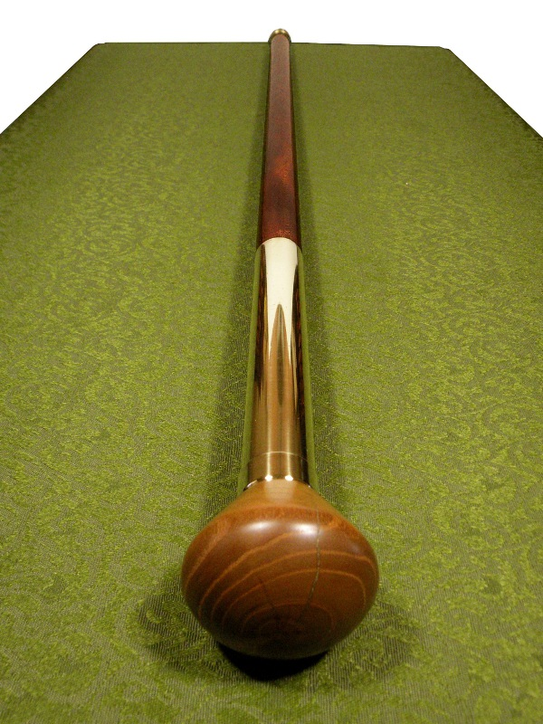
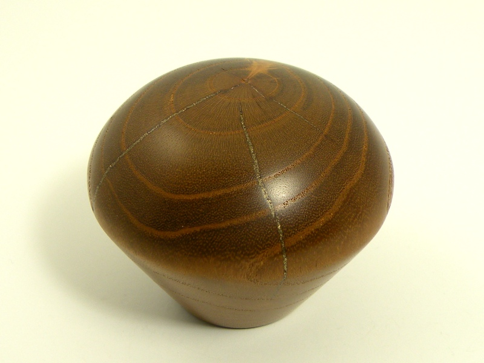
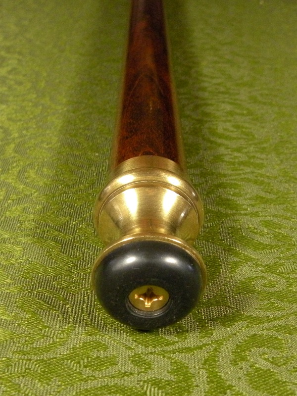

Gentleman's Cane Gentleman's Cane
Gentleman's Cane Gentleman's CaneCanes, or walking sticks, were once considered an essential part of a gentleman's wardrobe; in addition to the support they provided for balance, canes were a fashion accessory, a symbol of wealth, and an occasional weapon. Dismayed at the utilitarian crudeness of most canes sold today, I decided to craft a stick fit for a gentleman.
The shaft of this cane is stained cherry, 1" in diameter. Flush with the shaft is a brass sleeve extending roughly one-third of the way down the cane. The head is a piece of turned white mulberry, and the foot is a rubber-tipped brass ferrule.
The head is definitely the focus of the cane. I 'turned' (though I did not use a lathe) a well-seasoned piece of mulberry until it filled the palm of the hand comfortably. The mulberry had some checking from uneven drying, which I filled in the same way as on my Shillelagh, using brass filings, instead, as a filler material.
Mulberry is a seldom used wood in North America, though I understand it is more popular in the Orient. The wood is extremely dense and hard, and polishes well. Freshly cut, the wood is a luminous yellow, but in the open air it quickly ages to a dark, orangish-brown, as seen above. There is neither stain, nor finish on this wood; the color and sheen are entirely natural.
Most canes I have seen for sale have either had large, rubber caps over the end, giving them a purely orthopaedic look, or a metal ferrule for outdoor use. The all-rubber tips are ugly and coarse, while the metal tips are dangerous to use on - and destructive to - smooth floors. My solution was to combine the best points of both styles. The brass tip is glued to the cane shaft, while the rubber foot is fastened by a screw which passes into the shaft. The rubber bumper is a common piece found in hardware stores for attachment to furniture, meaning that when it wears through (and it will), replacement will be simple and cheap.
Created by Sean Corron, April 2, 2011.